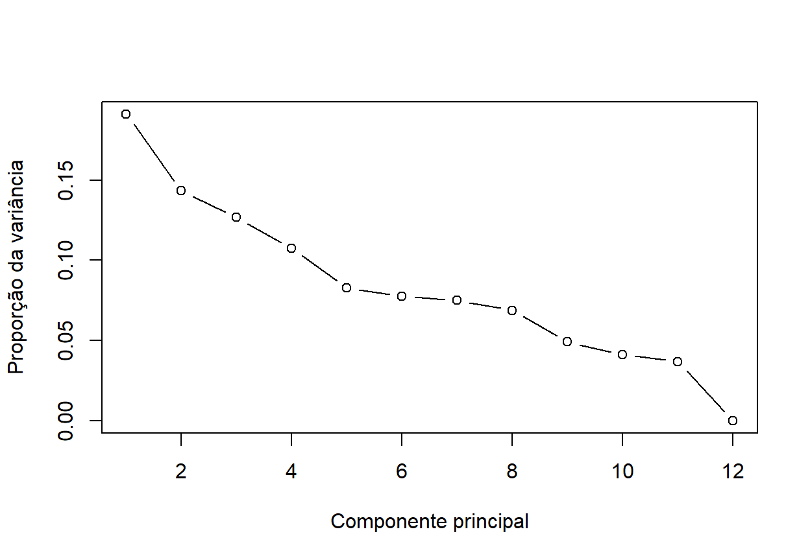
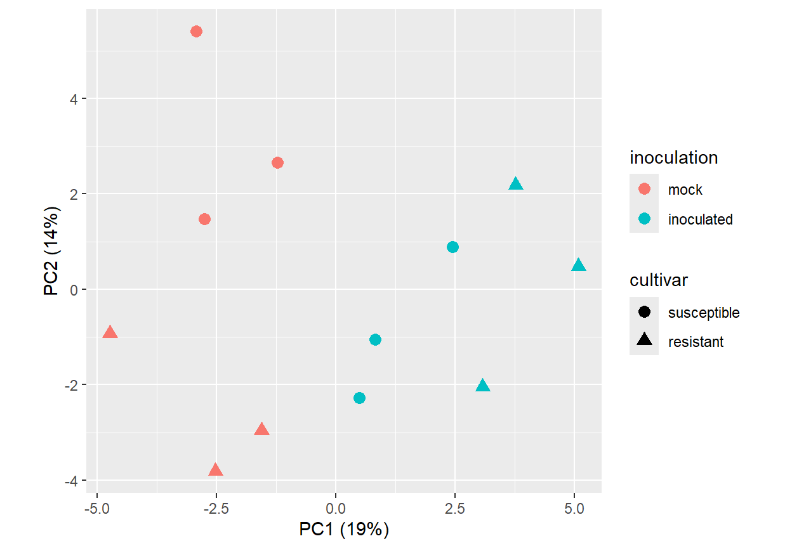
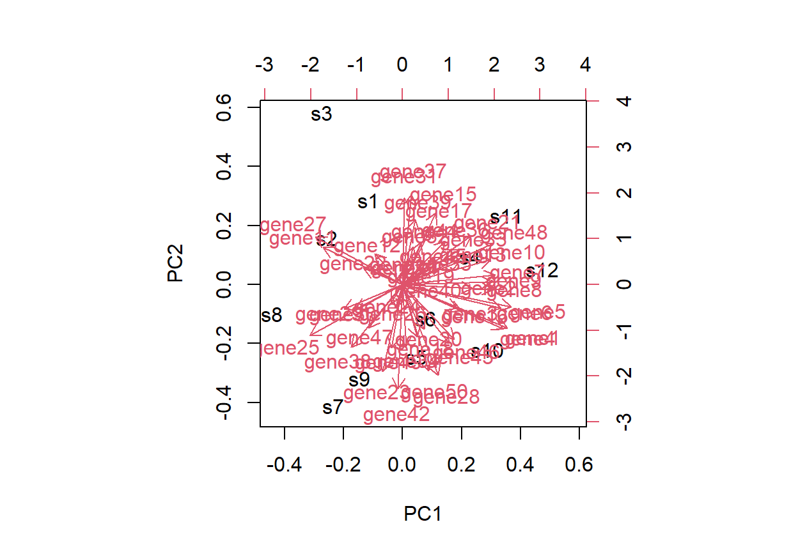
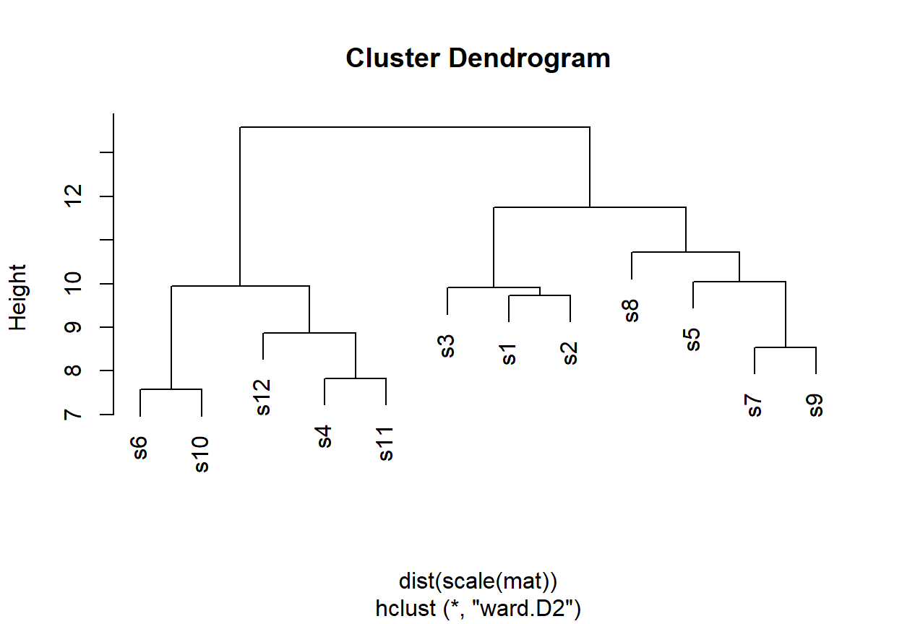
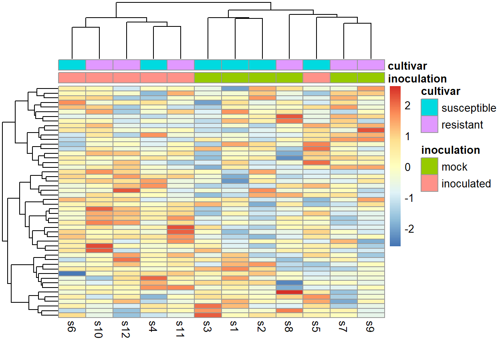
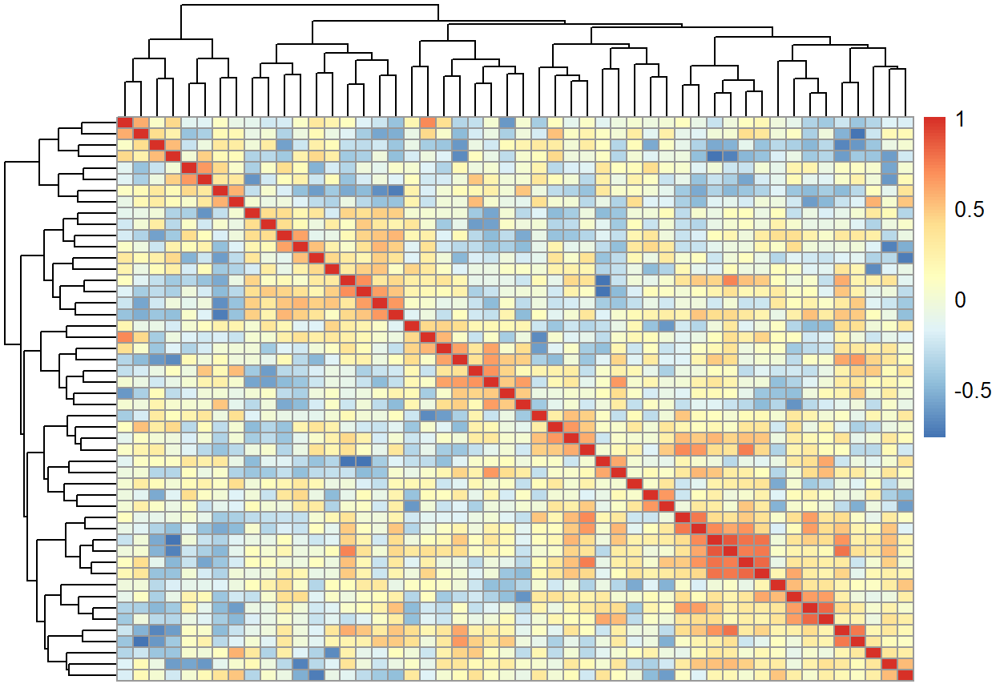

11 Como exploramos dados multivariados?
11.1 Objetivos de aprendizagem
Importante
Ao concluir este capítulo, o leitor deverá ser capaz de:
- reconhecer questões de pesquisa e conjuntos de dados em que muitas variáveis são medidas em cada amostra;
- organizar dados multivariados como uma matriz de amostras por variáveis;
- preparar dados multivariados para a análise, incluindo transformação, centralização e padronização;
- explicar como se definem distâncias e similaridades entre amostras;
- realizar e interpretar a análise de componentes principais, incluindo escores, cargas e variância explicada;
- realizar e interpretar o agrupamento hierárquico e o agrupamento por k-médias;
- construir e ler mapas de calor;
- distinguir a busca exploratória de padrões da inferência confirmatória;
- reconhecer os problemas de testes múltiplos e de efeitos de lote em dados de alta dimensionalidade;
- comunicar resultados multivariados sem exagerá-los.
11.2 Por que dados multivariados?
Os Capítulos 7 a 10 analisaram uma resposta de cada vez. Cada vez mais, os fitopatologistas medem muitas variáveis em cada amostra.
Exemplos típicos incluem:
- expressão gênica: a abundância de milhares de transcritos em plantas inoculadas e em plantas inoculadas apenas com o veículo (mock);
- painéis moleculares direcionados: a expressão de um conjunto de genes relacionados à defesa medida por qPCR;
- metabolômica e proteômica: centenas de compostos ou proteínas por amostra;
- perfis fisiológicos: taxa fotossintética, condutância estomática, fluorescência da clorofila e atividades enzimáticas medidas nas mesmas plantas;
- fenótipos de isolados: taxa de crescimento, esporulação, agressividade e sensibilidade a vários fungicidas para cada isolado;
- comunidades microbianas: a abundância relativa de centenas de táxons em cada amostra de solo ou de folha;
- dados espectrais: a reflectância em centenas de comprimentos de onda de folhas ou dosséis.
Nesses conjuntos de dados, as perguntas muitas vezes não dizem respeito a uma única variável, mas a padrões entre muitas variáveis:
- Quais amostras se parecem entre si?
- Os tratamentos separam as amostras no espaço definido por todas as variáveis?
- Quais variáveis mudam juntas?
- Há grupos de amostras ou de variáveis que não foram previstos?
Importante
Os métodos multivariados são, antes de tudo, ferramentas para enxergar a estrutura de dados complexos. Eles resumem e revelam padrões; não testam hipóteses por si sós nem estabelecem que os padrões são biologicamente reais.
11.3 Da questão biológica à exploração multivariada
Considere um experimento que mede a expressão de genes relacionados à defesa em cultivares resistentes e suscetíveis, inoculadas ou não.
11.3.1 Exploração e confirmação
O Capítulo 4 distinguiu a análise exploratória da confirmatória. A distinção é especialmente importante aqui. Com muitas variáveis, alguns padrões aparecerão apenas por acaso, e os métodos multivariados sempre produzirão uma imagem. Os padrões encontrados na exploração tornam-se hipóteses a serem avaliadas com delineamentos e análises adequados, e não conclusões.
11.4 Organizando dados multivariados
11.4.1 A matriz de dados
Os métodos multivariados operam sobre uma matriz de dados em que:
- cada linha é uma amostra (planta, parcela, isolado, folha);
- cada coluna é uma variável (gene, metabólito, característica, táxon);
- uma tabela separada de informações das amostras registra tratamentos, cultivares, blocos e outras variáveis do delineamento.
gene1 gene2 gene3 ... gene_p
sample1 5.2 0.8 3.1 ...
sample2 4.9 1.2 2.7 ...
...
sample_nEsse formato largo difere do formato longo e organizado recomendado no Capítulo 3 para a maioria das análises. Ambos são úteis: o formato organizado é a melhor forma de guardar e documentar os dados, e a matriz larga é derivada dele para a análise multivariada.
library(tidyr)
mat <- expr_long |>
pivot_wider(names_from = gene, values_from = expression) |>
tibble::column_to_rownames("sample") |>
as.matrix()11.4.2 Muitas variáveis, poucas amostras
Os conjuntos de dados multivariados em Fitopatologia frequentemente têm muito mais variáveis do que amostras: milhares de genes medidos em uma dúzia de plantas. Nessa situação:
- muitos padrões podem ser encontrados por acaso;
- métodos que estimam um parâmetro por variável tornam-se instáveis;
- a exploração visual e a redução de dimensionalidade são essenciais;
- o número de repetições biológicas continua determinando o quanto se pode concluir.
Aviso
Medir milhares de variáveis não aumenta o número de repetições. Um experimento com três plantas por tratamento continua sendo um experimento com três repetições, não importa quantos genes sejam medidos em cada planta.
11.5 Preparando os dados
11.5.1 Valores perdidos e controle de qualidade
Antes de qualquer análise multivariada, verifique valores perdidos, amostras que falharam e variáveis sem variação. Muitos métodos multivariados não lidam diretamente com valores perdidos, e a forma como eles são removidos ou imputados pode afetar os resultados.
11.5.2 Transformação
Muitas variáveis multivariadas são fortemente assimétricas à direita: níveis de expressão, abundâncias de metabólitos e contagens abrangem várias ordens de grandeza. Uma transformação logarítmica geralmente torna sua variação mais comparável e impede que algumas variáveis muito abundantes dominem a análise.
mat_log <- log2(mat + 1)Para contagens de sequenciamento, métodos especializados de normalização e transformação levam em conta as diferenças de profundidade de sequenciamento entre as amostras.
11.5.3 Centralização e padronização
Quando as variáveis são medidas em unidades diferentes, como taxa fotossintética (µmol m⁻² s⁻¹), teor de clorofila (unidades SPAD) e tamanho de lesão (mm), suas variâncias não são comparáveis. Sem padronização, as variáveis com maior variância numérica dominam a análise.
Padronizar cada variável para média zero e desvio padrão um dá a todas as variáveis o mesmo peso:
mat_scaled <- scale(mat_log)Padronizar ou não é uma decisão com consequências. Quando todas as variáveis estão na mesma escala e a magnitude de sua variação tem significado, como nos valores de expressão em log, a padronização pode ser desnecessária ou até indesejável, porque amplifica variáveis que quase não mudam.
Dica
Informe como os dados foram transformados, centralizados e padronizados. Escolhas diferentes podem produzir ordenações, agrupamentos e mapas de calor visivelmente diferentes a partir dos mesmos dados.
11.6 Distância e similaridade
Muitos métodos multivariados se baseiam em uma medida de quão diferentes duas amostras são.
11.6.1 Distância euclidiana
A distância em linha reta entre amostras no espaço definido pelas variáveis. É a distância natural para dados contínuos e adequadamente padronizados, e é a base da análise de componentes principais e do agrupamento por k-médias.
11.6.2 Distância baseada em correlação
Amostras ou variáveis são consideradas semelhantes se seus perfis sobem e descem juntos, independentemente de seus níveis absolutos. É comum no agrupamento de genes com padrões de expressão semelhantes.
11.6.3 Distâncias para dados de comunidades
Para abundâncias de táxons em comunidades microbianas, medidas como a dissimilaridade de Bray–Curtis são preferidas, porque não são influenciadas por ausências compartilhadas.
11.6.4 Tipos de variáveis misturados
Quando as variáveis incluem dados contínuos, categóricos e binários, como as características de isolados, a distância de Gower os combina em uma única medida.
d_euc <- dist(mat_scaled) # euclidiana
d_cor <- as.dist(1 - cor(t(mat_scaled))) # baseada em correlação
library(vegan)
d_bc <- vegdist(community, method = "bray") # Bray–Curtis11.7 Análise de componentes principais
11.7.1 A ideia
Quando muitas variáveis estão correlacionadas, boa parte da variação entre as amostras pode ser descrita por poucas direções subjacentes. A análise de componentes principais (ACP, ou PCA na sigla em inglês) encontra essas direções:
- o primeiro componente principal (PC1) é a direção ao longo da qual as amostras mais variam;
- o segundo componente principal (PC2) é a direção de maior variação restante, perpendicular ao PC1;
- e assim por diante, até tantos componentes quantas forem as variáveis ou as amostras.
Cada componente principal é uma combinação ponderada das variáveis originais. Projetar as amostras nos dois ou três primeiros componentes produz uma imagem de baixa dimensionalidade dos padrões dominantes nos dados.
11.7.2 Um exemplo simples
O código a seguir simula a expressão de 50 genes em 12 amostras de um delineamento dois por dois.
set.seed(606)
samples <- expand.grid(
rep = 1:3,
inoculation = c("mock", "inoculated"),
cultivar = c("susceptible", "resistant")
)
n <- nrow(samples)
p <- 50
mat <- matrix(rnorm(n * p, mean = 6, sd = 1), nrow = n,
dimnames = list(paste0("s", 1:n), paste0("gene", 1:p)))
# os genes 1–10 respondem à inoculação, mais fortemente na cultivar resistente
effect <- ifelse(samples$inoculation == "inoculated",
ifelse(samples$cultivar == "resistant", 3, 1.5), 0)
mat[, 1:10] <- mat[, 1:10] + effect11.7.3 Ajustando uma ACP no R
pca <- prcomp(mat, center = TRUE, scale. = TRUE)
summary(pca)Importance of components:
PC1 PC2 PC3 PC4 PC5 PC6 PC7
Standard deviation 3.0920 2.6772 2.5181 2.3173 2.03560 1.9710 1.93543
Proportion of Variance 0.1912 0.1434 0.1268 0.1074 0.08287 0.0777 0.07492
Cumulative Proportion 0.1912 0.3346 0.4614 0.5688 0.65164 0.7293 0.80426
PC8 PC9 PC10 PC11 PC12
Standard deviation 1.85453 1.56600 1.43408 1.35602 2.05e-15
Proportion of Variance 0.06879 0.04905 0.04113 0.03678 0.00e+00
Cumulative Proportion 0.87305 0.92209 0.96322 1.00000 1.00e+0011.7.4 Variância explicada
A proporção da variância total explicada por cada componente indica quanto da estrutura dos dados cada componente captura. Um gráfico de sedimentação (scree plot) mostra essas proporções em ordem decrescente.
var_explained <- pca$sdev^2 / sum(pca$sdev^2)
plot(var_explained, type = "b",
xlab = "Componente principal", ylab = "Proporção da variância")
Em conjuntos de dados com muitas variáveis, é comum que PC1 e PC2 juntos expliquem uma parcela modesta da variância. Isso não significa que a análise falhou; significa que a variação está distribuída em muitas direções.
11.7.5 Escores: onde estão as amostras?
Os escores são as coordenadas das amostras nos componentes principais. Representá-los graficamente, coloridos pelas variáveis do delineamento, mostra se as amostras se agrupam por tratamento, por cultivar ou por outra coisa.
library(ggplot2)
scores <- cbind(samples, as.data.frame(pca$x[, 1:2]))
ggplot(scores, aes(PC1, PC2, color = inoculation, shape = cultivar)) +
geom_point(size = 3) +
labs(
x = sprintf("PC1 (%.0f%%)", 100 * var_explained[1]),
y = sprintf("PC2 (%.0f%%)", 100 * var_explained[2])
) +
coord_equal()
11.7.6 Cargas: quais variáveis importam?
As cargas (loadings) são os pesos de cada variável original em cada componente. Variáveis com grandes cargas positivas ou negativas no PC1 são as que mais contribuem para a separação das amostras ao longo do PC1.
loadings <- pca$rotation[, 1:2]
head(loadings[order(-abs(loadings[, "PC1"])), ], 10) PC1 PC2
gene5 0.2764629 -0.065783837
gene1 0.2669092 -0.128121604
gene4 0.2558371 -0.129158483
gene6 0.2497328 -0.068759312
gene25 -0.2362822 -0.149913113
gene7 0.2355345 0.027272263
gene8 0.2287761 -0.014442768
gene48 0.2287524 0.119776907
gene9 0.2278760 0.007877981
gene10 0.2235339 0.07327984611.7.7 Biplots
Um biplot mostra juntos os escores das amostras e as cargas das variáveis, com as variáveis desenhadas como setas. Ele mostra quais variáveis estão associadas a quais grupos de amostras. Os biplots tornam-se ilegíveis com muitas variáveis; funcionam melhor com dezenas de variáveis, como características fisiológicas, do que com milhares de genes.
biplot(pca)
11.7.8 Interpretando uma ACP
Ao interpretar uma ACP, lembre-se de que:
- a ACP é não supervisionada: ela não sabe que tratamento cada amostra recebeu. Se os tratamentos se separam ao longo de um componente, o efeito do tratamento é uma das principais fontes de variação nos dados;
- a ausência de separação não significa que os tratamentos não têm efeito sobre nenhuma variável; significa que seu efeito não está entre as fontes dominantes de variação;
- o sinal de um componente é arbitrário; apenas as posições relativas importam;
- os eixos devem ser desenhados com a mesma escala, para que as distâncias não sejam distorcidas;
- a ACP descreve combinações lineares das variáveis e pode não captar estruturas não lineares.
Importante
Os primeiros componentes frequentemente refletem as maiores fontes de variação do experimento, e elas nem sempre são biológicas. Representar os escores da ACP coloridos por data de processamento, lote de extração ou corrida de sequenciamento é uma das formas mais eficazes de detectar problemas técnicos.
11.7.9 Outros métodos de ordenação
A ACP se baseia em distâncias euclidianas. Quando outra distância é mais adequada, outros métodos de ordenação representam as amostras em um espaço de baixa dimensionalidade:
- a análise de coordenadas principais (PCoA) funciona com qualquer distância, como a de Bray–Curtis para comunidades;
- o escalonamento multidimensional não métrico (NMDS) preserva a ordem das distâncias, e não seus valores.
Esses métodos são comuns em estudos de comunidades microbianas.
11.8 Agrupamento
11.8.1 A ideia
Os métodos de agrupamento reúnem amostras (ou variáveis) de modo que os membros de um mesmo grupo sejam mais semelhantes entre si do que aos membros de outros grupos. Diferentemente da ACP, que mostra variação contínua, o agrupamento impõe grupos discretos.
11.8.2 Agrupamento hierárquico
O agrupamento hierárquico começa com cada amostra como um grupo e funde sucessivamente os grupos mais semelhantes. O resultado é um dendrograma que mostra a ordem e a distância em que os grupos foram fundidos.
A forma como se definem as distâncias entre grupos, o método de ligação, afeta o resultado:
- a ligação completa usa a maior distância entre os membros;
- a ligação média usa a distância média;
- o método de Ward funde os grupos de modo a minimizar o aumento da variância dentro dos grupos e tende a produzir grupos compactos.
hc <- hclust(dist(scale(mat)), method = "ward.D2")
plot(hc)
groups <- cutree(hc, k = 2)
table(groups, samples$inoculation)
groups mock inoculated
1 6 1
2 0 511.8.3 Agrupamento por k-médias
O método k-médias divide as amostras em um número especificado de grupos, \(k\), atribuindo cada amostra ao grupo com o centro mais próximo. O resultado depende de \(k\) e das posições iniciais aleatórias, de modo que o algoritmo deve ser executado a partir de vários inícios.
km <- kmeans(scale(mat), centers = 2, nstart = 25)
table(km$cluster, samples$inoculation)
mock inoculated
1 0 6
2 6 011.8.4 Quantos grupos?
Raramente existe um único número correto de grupos. Critérios como a soma de quadrados dentro dos grupos (o gráfico do “cotovelo”) e as larguras de silhueta podem orientar a escolha, mas o conhecimento biológico e o objetivo da análise importam mais.
library(cluster)
sil <- silhouette(km$cluster, dist(scale(mat)))
summary(sil)Silhouette of 12 units in 2 clusters from silhouette.default(x = km$cluster, dist = dist(scale(mat))) :
Cluster sizes and average silhouette widths:
6 6
0.12918363 0.02333586
Individual silhouette widths:
Min. 1st Qu. Median Mean 3rd Qu. Max.
-0.01024 0.01962 0.05549 0.07626 0.13146 0.17607 11.8.5 O que os agrupamentos mostram e o que não mostram
Os algoritmos de agrupamento sempre produzem grupos, mesmo a partir de dados sem nenhuma estrutura de grupos. Um dendrograma, portanto, não demonstra que existem grupos distintos.
Perguntas úteis incluem:
- Os grupos são estáveis quando os dados são reamostrados ou o método é ligeiramente alterado?
- Eles correspondem a variáveis biológicas ou do delineamento conhecidas?
- São determinados por poucas variáveis ou por muitas?
- Poderiam refletir fatores técnicos, como o lote?
Aviso
Grupos encontrados em um conjunto de dados não são evidência independente de grupos biológicos. Não teste diferenças entre os grupos usando as mesmas variáveis usadas para defini-los.
11.9 Mapas de calor
11.9.1 Lendo um mapa de calor
Um mapa de calor (heatmap) mostra a matriz de dados como uma grade de células coloridas, com as amostras em uma dimensão e as variáveis na outra. As linhas e colunas geralmente são reordenadas por agrupamento hierárquico, e dendrogramas são desenhados nas margens. Barras de anotação mostram variáveis do delineamento, como tratamento e cultivar.
Os mapas de calor estão entre as figuras mais comuns na Fitopatologia molecular, porque mostram tanto as amostras quanto as variáveis que as distinguem.
11.9.2 Construindo um mapa de calor
library(pheatmap)
annotation <- data.frame(
inoculation = samples$inoculation,
cultivar = samples$cultivar,
row.names = rownames(mat)
)
pheatmap(
t(mat),
scale = "row",
annotation_col = annotation,
clustering_method = "ward.D2",
show_rownames = FALSE
)
11.9.3 Padronizando as linhas
Quando cada linha é um gene, os valores frequentemente são padronizados dentro das linhas (escores z), para que as cores mostrem se cada gene está relativamente alto ou baixo em cada amostra. A padronização das linhas remove as diferenças de nível geral de expressão entre os genes; um gene expresso em níveis muito baixos pode parecer tão “induzido” quanto um gene muito expresso.
11.9.4 Cor
Os princípios do Capítulo 5 se aplicam:
- use uma paleta divergente, centrada em zero, para escores z ou log fold changes;
- use uma paleta sequencial para valores que apenas aumentam, como abundâncias;
- evite paletas vermelho–verde, que muitos leitores não conseguem distinguir;
- inclua uma legenda de cores com as unidades ou a padronização usada.
11.9.5 O que os mapas de calor podem esconder
Os mapas de calor enfatizam padrões, mas escondem magnitudes, incerteza e o número de repetições. O agrupamento produzirá blocos visualmente marcantes mesmo em dados aleatórios. Por isso, os mapas de calor são mais bem usados junto com as análises que quantificam as diferenças nas variáveis de interesse.
11.10 Relações entre variáveis
As matrizes de correlação resumem como as variáveis mudam juntas, estendendo as ideias do Capítulo 8 a muitas variáveis ao mesmo tempo. Elas podem revelar grupos de genes ou características que respondem juntos e redundâncias entre as variáveis medidas.
cor_mat <- cor(mat_scaled)
pheatmap(cor_mat, show_rownames = FALSE, show_colnames = FALSE)
Com muitas variáveis e poucas amostras, muitas correlações parecerão fortes apenas por acaso, e as matrizes de correlação devem ser lidas como exploratórias.
11.11 Da exploração à inferência
11.11.1 Testando muitas variáveis
Um passo comum depois da exploração é testar cada variável separadamente, por exemplo para identificar genes cuja expressão difere entre plantas inoculadas e plantas mock. Cada teste é uma comparação entre grupos como as dos Capítulos 7 e 10.
Com milhares de testes, muitos valores-P pequenos ocorrem por acaso. Se 5.000 genes forem testados com nível de significância de 5% e nenhum responder de fato, cerca de 250 ainda parecerão significativos.
11.11.2 Controlando as falsas descobertas
A taxa de falsas descobertas (FDR) é a proporção esperada de falsos positivos entre as variáveis declaradas significativas. Ajustar os valores-P para controlar a FDR é prática-padrão em genômica.
# um teste t por gene: inoculadas x mock
p_values <- apply(mat, 2, function(g) t.test(g ~ samples$inoculation)$p.value)
sum(p_values < 0.05)[1] 10p_adj <- p.adjust(p_values, method = "BH")
sum(p_adj < 0.05)[1] 2# genes significativos e seus log2 fold changes (inoculadas - mock)
lfc <- colMeans(mat[samples$inoculation == "inoculated", ]) -
colMeans(mat[samples$inoculation == "mock", ])
round(lfc[p_adj < 0.05], 2)gene5 gene6
2.51 2.58 Métodos especializados para dados de expressão gênica melhoram o teste de cada gene isoladamente ao compartilhar informação entre os genes, o que é particularmente valioso com poucas repetições.
Importante
Como nos capítulos anteriores, o número de variáveis significativas é menos informativo do que o tamanho das mudanças. Relate os tamanhos de efeito, como os log fold changes, junto com os valores-P ajustados.
11.11.3 Testando diferenças entre grupos no espaço multivariado
A análise de variância multivariada por permutação (PERMANOVA) testa se grupos de amostras diferem em sua posição no espaço multivariado, usando qualquer medida de distância. É muito usada em estudos de comunidades microbianas.
library(vegan)
adonis2(dist(mat_scaled) ~ cultivar * inoculation, data = samples)Permutation test for adonis under reduced model
Permutation: free
Number of permutations: 999
adonis2(formula = dist(mat_scaled) ~ cultivar * inoculation, data = samples)
Df SumOfSqs R2 F Pr(>F)
Model 3 196.86 0.35793 1.4865 0.002 **
Residual 8 353.14 0.64207
Total 11 550.00 1.00000
---
Signif. codes: 0 '***' 0.001 '**' 0.01 '*' 0.05 '.' 0.1 ' ' 1A PERMANOVA é sensível tanto a diferenças de dispersão quanto a diferenças de posição. Um resultado significativo pode significar que os grupos diferem em sua variabilidade, e não em sua composição média, o que deve ser verificado separadamente.
11.11.4 Métodos supervisionados
Métodos como a análise discriminante e a análise discriminante por mínimos quadrados parciais (PLS-DA) encontram combinações de variáveis que melhor separam grupos predefinidos. Com muitas variáveis e poucas amostras, eles separam quase qualquer grupo, inclusive grupos aleatórios. Seus resultados só têm significado quando validados em amostras não usadas para ajustá-los.
Aviso
Um gráfico em que um método supervisionado separa perfeitamente os tratamentos não é evidência de efeito do tratamento. Pode mostrar apenas que o método tinha variáveis suficientes para separar qualquer coisa.
11.12 Questões de delineamento em estudos multivariados
11.12.1 Repetição biológica e técnica
Os princípios do Capítulo 2 se aplicam integralmente. As repetições biológicas (plantas ou parcelas independentes) fornecem informação sobre a população; as repetições técnicas (extrações ou corridas repetidas da mesma amostra) fornecem informação sobre o erro de medida. Tratar repetições técnicas como biológicas infla a evidência aparente.
11.12.2 Efeitos de lote
As amostras são frequentemente processadas em lotes: dias de extração, placas, canaletas de sequenciamento. Os lotes podem introduzir diferenças sistemáticas maiores do que os efeitos biológicos de interesse.
Quando os lotes coincidem com os tratamentos — por exemplo, todas as amostras inoculadas extraídas em um dia e todas as amostras mock em outro —, os efeitos do tratamento e do lote não podem ser separados por nenhuma análise.
Importante
Casualize as amostras entre os lotes e registre a informação de lote. Efeitos de lote equilibrados entre os tratamentos podem ser considerados na análise; efeitos de lote confundidos com os tratamentos, não.
11.13 Pesquisa na prática: expressão de genes de defesa em cultivares resistentes e suscetíveis
DicaPesquisa revisitada: Plantas resistentes respondem de forma diferente à infecção?
Considere um experimento em que folhas de uma cultivar resistente e de uma suscetível foram inoculadas com um patógeno ou inoculadas apenas com o veículo, com várias repetições biológicas por combinação, e a expressão de um painel de genes relacionados à defesa foi medida.
A questão científica não é simplesmente:
As amostras se agrupam por tratamento?
Em vez disso, pergunte:
- Qual é a unidade experimental, e quantas repetições biológicas havia?
- Como os valores de expressão foram normalizados, transformados e padronizados?
- Quais são as fontes dominantes de variação em uma ACP, e elas correspondem à cultivar, à inoculação ou ao lote de processamento?
- Quais genes mais contribuem para a separação das amostras?
- A resposta à inoculação é maior em uma cultivar do que na outra, e em quais genes?
- Qual é o tamanho das mudanças de expressão, e quantos genes continuam significativos depois de controlar a taxa de falsas descobertas?
- Quais padrões são robustos o suficiente para orientar experimentos direcionados de acompanhamento?
11.14 Um fluxo de trabalho prático para dados multivariados
11.15 Relatando análises multivariadas
Uma boa descrição geralmente inclui:
11.15.1 O que foi medido?
O número de amostras, o número de variáveis e o delineamento.
11.15.2 Como os dados foram preparados?
Normalização, transformação, tratamento dos valores perdidos, centralização e padronização.
11.15.3 Quais métodos foram usados?
Medida de distância, método de ordenação, algoritmo de agrupamento e método de ligação.
11.15.4 Quanto da variação foi resumido?
A proporção da variância explicada pelos componentes mostrados.
11.15.5 Quão robustos são os padrões?
Estabilidade dos agrupamentos e verificação de efeitos de lote.
11.15.6 O que foi testado?
Número de testes, método de ajuste e tamanhos de efeito.
11.15.7 Interpretação biológica
Quais padrões são interpretados biologicamente e quais são tratados como hipóteses.
Em vez de:
A ACP separou claramente os tratamentos, demonstrando uma forte resposta de defesa.
prefira algo como:
O PC1 (19% da variância) separou as amostras inoculadas das amostras mock, com as maiores cargas para os genes 1 a 10. A separação foi maior na cultivar resistente. Dos 50 genes testados (inoculadas versus mock, três repetições biológicas por combinação), 10 tiveram P < 0,05, mas apenas 2 (genes 5 e 6) permaneceram significativos após o ajuste pela FDR, ambos com log2 fold change de cerca de 2,5.
Esses números vêm das saídas da ACP e dos testes por gene apresentados neste capítulo. Eles também ilustram um ponto central: com apenas três repetições por grupo, o controle da taxa de falsas descobertas deixa poucos genes significativos, embora dez genes tenham sido simulados com respostas reais à inoculação.
11.16 Erros comuns
11.16.1 Tratar muitas variáveis como muitas repetições
A repetição depende do número de amostras independentes.
11.16.2 Não padronizar variáveis medidas em unidades diferentes
As variáveis com maior variância numérica dominam.
11.16.3 Não informar as escolhas de transformação e padronização
Escolhas diferentes produzem imagens diferentes.
11.16.4 Interpretar a separação na ACP como um teste estatístico
A ACP descreve a variação; não a testa.
11.16.5 Ignorar a variância explicada pelos componentes mostrados
Dois componentes podem resumir apenas uma pequena parte dos dados.
11.16.6 Tratar agrupamentos como grupos comprovados
O agrupamento sempre encontra grupos.
11.16.7 Testar os grupos com as variáveis usadas para criá-los
O teste é circular.
11.16.8 Ler as cores do mapa de calor como magnitudes após padronizar as linhas
As cores após a padronização das linhas mostram níveis relativos, e não absolutos.
11.16.9 Usar escalas de cor vermelho–verde
Muitos leitores não conseguem distingui-las.
11.16.10 Ignorar os testes múltiplos
Muitas variáveis produzem muitos falsos positivos.
11.16.11 Confundir lote com tratamento
Nenhuma análise consegue separá-los depois.
11.16.12 Confiar na separação perfeita obtida por métodos supervisionados
Com muitas variáveis, qualquer agrupamento pode ser separado.
11.17 Lista de verificação para análises multivariadas
Antes de interpretar uma análise multivariada, pergunte:
- Que questão biológica está sendo abordada?
- Quais são as amostras e quais são as variáveis?
- Quantas repetições biológicas existem?
- As amostras foram processadas em lotes, e os lotes estão confundidos com os tratamentos?
- Como os valores perdidos foram tratados?
- Como os dados foram normalizados, transformados e padronizados?
- Qual medida de distância é adequada?
- Quanto da variância os componentes mostrados explicam?
- Quais variáveis determinam os padrões?
- Os padrões correspondem ao delineamento, à biologia ou a fatores técnicos?
- Os agrupamentos são estáveis?
- As linhas ou colunas do mapa de calor foram padronizadas, e como?
- Os testes múltiplos foram considerados?
- Os tamanhos de efeito são relatados junto com a significância?
- Quais conclusões são confirmadas e quais são hipóteses?
11.18 Resumo do capítulo
Muitos estudos em Fitopatologia medem numerosas variáveis em cada amostra, da expressão gênica e dos perfis de metabólitos às características fisiológicas e às comunidades microbianas. Os métodos multivariados resumem esses dados e revelam estruturas que não podem ser vistas uma variável de cada vez. Seus resultados dependem de como os dados são organizados, transformados, centralizados e padronizados, e da medida de distância escolhida.
A análise de componentes principais mostra as direções dominantes de variação entre as amostras por meio de escores, cargas e variância explicada. O agrupamento reúne amostras ou variáveis semelhantes, e os mapas de calor mostram toda a matriz de dados junto com esses agrupamentos. Esses métodos são exploratórios: sempre produzem uma imagem, e os padrões podem refletir o acaso, artefatos técnicos ou efeitos de lote, além da biologia. Passar da exploração à inferência exige testes direcionados com controle da taxa de falsas descobertas, atenção aos tamanhos de efeito e, sobretudo, delineamentos com repetição biológica adequada e casualização das amostras entre os lotes de processamento.
11.19 Conceitos-chave
Ao concluir este capítulo, você deverá ser capaz de explicar:
- dados multivariados;
- matriz de dados;
- dados de alta dimensionalidade;
- transformação;
- centralização;
- padronização;
- distância e similaridade;
- distância euclidiana;
- dissimilaridade de Bray–Curtis;
- análise de componentes principais;
- componente principal;
- variância explicada;
- gráfico de sedimentação;
- escores;
- cargas;
- biplot;
- ordenação;
- agrupamento hierárquico;
- método de ligação;
- dendrograma;
- agrupamento por k-médias;
- silhueta;
- mapa de calor;
- padronização das linhas;
- taxa de falsas descobertas;
- PERMANOVA;
- métodos supervisionados e não supervisionados;
- efeito de lote;
- repetição biológica e técnica.
11.20 Exercícios
11.20.1 Exercício 1. Organizando um conjunto de dados multivariados
Você recebe uma planilha em que cada linha contém um identificador de amostra, o nome de um gene e um valor de expressão.
- descreva como convertê-la em uma matriz de amostras por genes;
- descreva a tabela separada de informações das amostras de que você precisaria;
- explique por que os dois formatos são úteis.
11.20.2 Exercício 2. Padronizar ou não padronizar?
Usando um conjunto de dados de características fisiológicas medidas em unidades diferentes:
- faça uma ACP sem padronização;
- faça uma ACP com padronização;
- compare a variância explicada e as cargas;
- explique qual análise é mais adequada e por quê.
11.20.3 Exercício 3. Interpretando uma ACP
Usando os dados simulados de expressão gênica deste capítulo:
- faça uma ACP;
- represente os escores coloridos pela inoculação e com formatos pela cultivar;
- relate a variância explicada pelo PC1 e pelo PC2;
- identifique os genes com as maiores cargas no PC1;
- descreva o padrão biológico sugerido pelo gráfico.
11.20.4 Exercício 4. Grupos a partir de ruído
Gere uma matriz de valores aleatórios sem nenhuma estrutura.
- faça um agrupamento hierárquico e desenhe o dendrograma;
- desenhe um mapa de calor com agrupamento;
- descreva o que você vê;
- explique o que isso implica para a interpretação de agrupamentos em dados reais.
11.20.5 Exercício 5. Elaborando um mapa de calor
Usando os dados simulados, construa um mapa de calor com anotações das amostras. Compare versões com e sem padronização das linhas e com duas paletas de cores diferentes, e explique qual versão comunica melhor os resultados.
11.20.6 Exercício 6. Testes múltiplos
Teste cada gene do conjunto de dados simulado quanto à diferença entre amostras inoculadas e mock.
- conte os genes com P < 0,05;
- ajuste os valores-P para controlar a taxa de falsas descobertas;
- conte os genes que continuam significativos;
- relate os efeitos estimados dos genes significativos.
11.20.7 Exercício 7. Avaliação de um artigo publicado
Escolha um artigo recente de Fitopatologia que use ACP, agrupamento ou mapas de calor.
Identifique:
- as amostras e as variáveis;
- o número de repetições biológicas;
- como os dados foram transformados e padronizados;
- se a variância explicada foi relatada;
- se os efeitos de lote foram considerados;
- se os agrupamentos foram tratados como hipóteses ou como conclusões;
- se os testes múltiplos foram considerados;
- se os tamanhos de efeito foram relatados.
11.21 Reflexão
Os métodos multivariados sempre produzem uma imagem. A tarefa científica é decidir o que a imagem significa.
Discuta essa afirmação usando um exemplo da Fitopatologia molecular.
11.22 Próximos passos
Os Capítulos 7 a 11 trataram da análise de diferentes tipos de dados. Uma análise só cumpre seu propósito quando seus resultados são comunicados com clareza a outras pessoas. O Capítulo 12 discute como preparar figuras, tabelas, resumos estatísticos e interpretações escritas que apresentem a evidência científica de forma exata e eficaz.